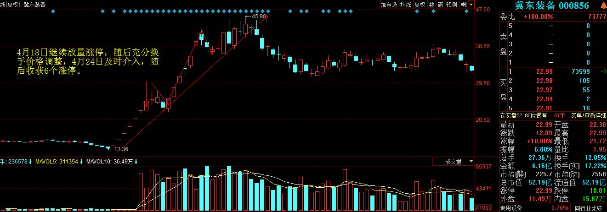
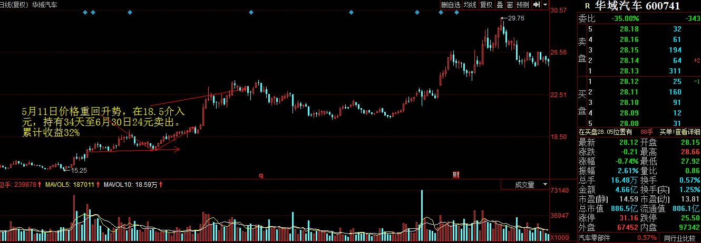

钟高辉 (太极战法)
钟高辉 (太极战法)
 首席投顾：A5167414316601057
首席投顾：A5167414316601057
投资理念
价值为主，波段为辅。
计划为经，仓位为纬。
计划为经，仓位为纬。
独家战法 - 太极战法
太极的奥义：阴阳转化，刚柔相济，讲究的是心平气和，以辞制动。太极战法擅长从市场力量薄弱环节入手，在多空双方的力量相互转化中，寻找到波段拐点，在波段行情的起点里仓介入，在行悄的衰竭点提前离场，在完整的操作周期内以最小的风险获取最大的收益。
经典战绩

2017年4月24日 冀东装备000856 雄安新区、小盘股概念，前期调整完毕第三浪起涨时，利用双龙战法成功介入，于24元持有至5月4日的42元，持有周期8天，累计收益高达75%。

2017年5月11日 华域汽车 600741 业绩稳定的成长股，国内汽车零部件提供商龙头，新能源汽车概念，价格突破前期高点后回踩支撑，利用太极战法成功在新行情发动时买入，5月11日18.5元买入，持有一个上涨周期34天，6月30日清仓24元，实现收益32%。
老师特权
1. 价值起源实战训练
2. 太极战法私享课程
3. 短波金钻股票池
2. 太极战法私享课程
3. 短波金钻股票池
老师介绍
中科大量化分析学名门弟子、中国第二批红马甲严师教授，历任多家投资机构研究员、策略分析师、研究部副总监，直接参与运作资金近8亿,理论与实战的积累丰富扎实，总结提炼出独特的投资体系，业内同仁贈送名号波段圣手。
操作风格以基本面、政策面为主，技术面、资金面为辅，拥有完善的投资逻辑和多角度投资策略，针对市场热点变换能够灵活转变。擅长从波段的起点介入，在波段的高点卖出，对板块内部行情的演化和板块的轮动有比较深刻的理解和把握，对于产业链和公司竞争格局的演变有独特的研究。在多年的实战中，坚持以大盈小亏、多赚少赔为准则，累计实现收益的稳定增长
操作风格以基本面、政策面为主，技术面、资金面为辅，拥有完善的投资逻辑和多角度投资策略，针对市场热点变换能够灵活转变。擅长从波段的起点介入，在波段的高点卖出，对板块内部行情的演化和板块的轮动有比较深刻的理解和把握，对于产业链和公司竞争格局的演变有独特的研究。在多年的实战中，坚持以大盈小亏、多赚少赔为准则，累计实现收益的稳定增长